ทิปสุดเจ๋งของคำสั่ง fg : เมื่อ Ctrl+Z ช่วยเซฟเซสชันเทอร์มินัลของคุณ
เผยแพร่เมื่อ 18 April 2026
- ปัญหา: เทอร์มินัลไม่ว่าง
- สามคำสั่งที่จำเป็น
- สถานการณ์ที่ 1: บิลด์ที่ยาวนาน
- สถานการณ์ที่ 2: บรรณาธิการที่ถูกลืม
- สถานการณ์ที่ 3: โปรเซส opencode ที่ถูกระงับ
- สถานการณ์ที่ 4: จัดการหลายงานพร้อมกัน
- ความแตกต่างระหว่าง fg, bg, Ctrl+Z, Ctrl+C และ &
- วงจรชีวิตที่สมบูรณ์ของงาน
- เคล็ดลับขั้นสูง
- หลุมพรางและข้อผิดพลาดที่พบบ่อย
- แผนภาพสรุป
- ทำไม fg จึงถูกประเมินต่ำเกินไป
- บันทึกทางเทคนิค: สัญญาณ
- บทสรุป
- เอกสารอ้างอิง
คุณกำลังเริ่ม`./gradlew build`, เทอร์มินัลค้างเป็นเวลา 3 นาที และคุณจำเป็นต้องทำอย่างอื่น ในระหว่างนั้น ใช่ไหม? ไม่จำเป็นต้องเปิดแท็บใหม่`Ctrl+Z`ระงับกระบวนการ,`fg`นำมันกลับไปยังจุดเดิมที่คุณทิ้งไว้พอดี นี่คือทิป Unix ที่ถูกประเมินต่ำที่สุดในชีวิตประจำวันของนักพัฒนา
- ของปลอม
-
Please provide the French text you’d like me to translate.
ปัญหา: เทอร์มินัลไม่ว่าง
นักพัฒนาทุกคนเคยเจอสถานการณ์นี้:
$ ./gradlew build
> Building...เทอร์มินัลค้างอยู่ คุณไม่สามารถพิมพ์คำสั่งใด ๆ ได้อีกแล้ว และคุณจำเป็นต้องเปิดดูไฟล์ เรียกใช้`git status`, หรือตรวจสอบพอร์ตที่ถูกใช้งานอยู่
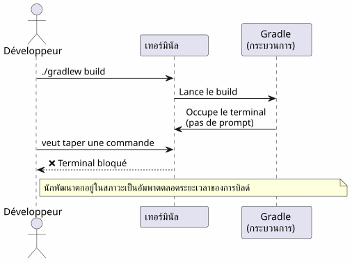
นักพัฒนาส่วนใหญ่เปิดเทอร์มินัลใหม่ แต่มีวิธีที่หรูหรากว่า เร็วกว่า และเป็นเนทีฟ: การจัดการงาน
สามคำสั่งที่จำเป็น
Ctrl+Z — ระงับ (SIGTSTP)
`Ctrl+Z`ส่งสัญญาณ`SIGTSTP`ไปยังกระบวนการที่ทำงานอยู่เบื้องหน้า กระบวนการคือแขวน— ไม่ได้ถูกฆ่า — และเทอร์มินัลกลับมาที่พรอมต์ของมัน
$ ./gradlew build
> Building...
^Z
[1]+ Stoppé ./gradlew build
$จำนวนในวงเล็บเหลี่ยม`[1]`คือหมายเลขงาน. Le `+`ระบุงานเริ่มต้น
fg — ทำต่อในเบื้องหน้า
`fg`นำงานที่ถูกระงับกลับมาสู่เบื้องหน้า กระบวนการจะดำเนินต่อจากจุดที่หยุดไว้พอดี
$ fg
./gradlew build
> Building... (reprend où il en était)ด้วยหมายเลขงานเฉพาะ:
$ fg %2bg — ดำเนินการต่อในเบื้องหลัง
`bg`ดำเนินกระบวนการต่อโดยไม่บล็อกเทอร์มินัล เหมาะสำหรับการบิลด์ที่ใช้เวลานาน
$ bg
[1]+ ./gradlew build &
$Le `&`ที่ส่วนท้ายหมายความว่ากระบวนการทำงานอยู่ในเบื้องหลัง
jobs — แสดงรายการงานของเชลล์
$ jobs
[1]- Stoppé vim README.md
[2]+ En cours ./gradlew build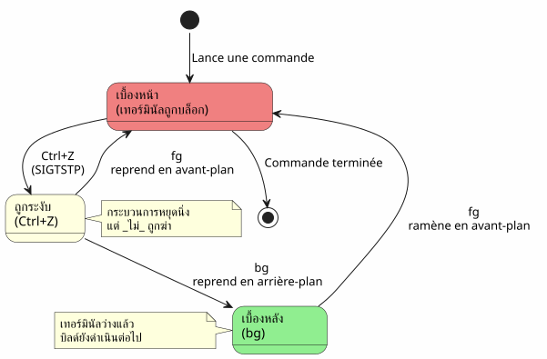
สถานการณ์ที่ 1: บิลด์ที่ยาวนาน
นี่คือกรณีการใช้งานที่พบบ่อยที่สุด คุณเริ่มบิลด์ Gradle เทอร์มินัลถูกบล็อก และคุณจำเป็นต้องทำอย่างอื่น
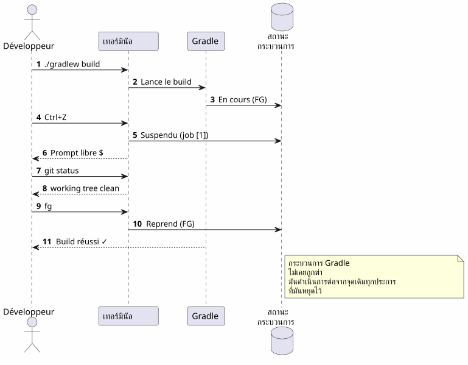
ทีละขั้นตอน
$ ./gradlew build
> Building...
^Z
[1]+ Stoppé ./gradlew build
$ git status
On branch main
nothing to commit, working tree clean
$ fg
./gradlew build
> Building...
BUILD SUCCESSFUL in 2m 34sสถานการณ์ที่ 2: บรรณาธิการที่ถูกลืม
คุณอยู่ใน`vim`, คุณจำเป็นต้องดูไฟล์อื่น โดยไม่ ออกจาก`vim`.
# Dans vim, en mode commande :
:shell
$ cat /path/to/other/file.txt
$ exit
# Retour dans vimแต่มันหนักนะ กับ`Ctrl+Z`, มันเกิดขึ้นทันที:
# Dans vim, n'importe quel moment :
Ctrl+Z
[1]+ Stoppé vim README.md
$ cat /path/to/other/file.txt
# ... lire le fichier ...
$ fg
vim README.md
# Retour exact là où on en était, curseur en place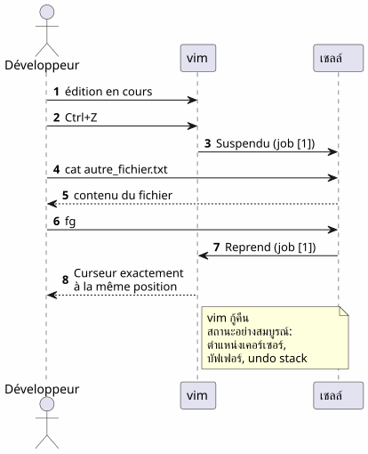
No source text was provided to translate. Please send the French text you’d like translated into Thai.vim`ฟื้นฟูสภาพของตนได้อย่างสมบูรณ์แบบหลังจากหนึ่ง`fg: ตำแหน่งเคอร์เซอร์ เนื้อหาของบัฟเฟอร์ ประวัติการเลิกทำ — ทั้งหมดถูกเก็บรักษาไว้
สถานการณ์ที่ 3: โปรเซส opencode ที่ถูกระงับ
นี่คือสถานการณ์ที่กระตุ้นให้เกิดบทความนี้ คุณใช้`opencode`(เครื่องมือ CLI สำหรับควบคุม LLM บนโค้ดของคุณ) และกระบวนการถูกหยุดชั่วคราว
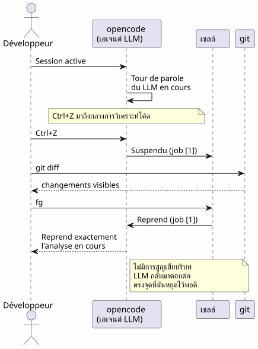
$ opencode
# ... session en cours, LLM analyse le code ...
^Z
[1]+ Stoppé opencode
$ git diff HEAD~1
# vérifier les changements récents
$ fg
opencode
# Le LLM reprend là où il s'était arrêtéข้อได้เปรียบมีสองประการ:
-
ไม่มีการสูญเสียบริบท: เซสชัน LLM, ประวัติการสนทนา, ไฟล์ที่เปิดอยู่ — ทั้งหมดถูกเก็บรักษาไว้
-
ไม่มีการรีสตาร์ท: ไม่จำเป็นต้องรีสตาร์ท opencode, โหลดบริบทใหม่, หรืออธิบายปัญหาซ้ำให้ LLM
สถานการณ์ที่ 4: จัดการหลายงานพร้อมกัน
fg et `bg`ยอมรับหมายเลขงานเพื่อระบุโพรเซสเฉพาะเมื่อมีหลายโพรเซสถูกระงับ
$ vim config.yml
^Z
[1]+ Stoppé vim config.yml
$ ./gradlew test
^Z
[2]+ Stoppé ./gradlew test
$ htop
^Z
[3]+ Stoppé htop
$ jobs
[1] Stoppé vim config.yml
[2]- Stoppé ./gradlew test
[3]+ Stoppé htop
$ fg %2
./gradlew test
# Le build reprend en avant-plan
$ bg %3
[3] htop &
# htop reprend en arrière-plan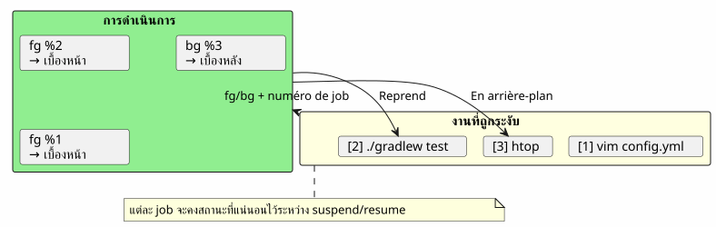
สรุปคำสั่งเกี่ยวกับงาน
| คำสั่งซื้อ | เอฟเฟกต์ | ตัวอย่าง |
|---|---|---|
|
ระงับกระบวนการเบื้องหน้า |
การส่ง`SIGTSTP` |
|
ดำเนินงานเริ่มต้นต่อในโฟร์กราวด์ |
|
|
ทำ job n ต่อในเบื้องหน้า |
|
|
ดำเนินการงานเริ่มต้นต่อในเบื้องหลัง |
|
|
ทำงาน n ต่อในเบื้องหลัง |
|
|
แสดงรายการงานของเชลล์ปัจจุบัน |
|
|
ทำงาน n ให้เสร็จ |
|
ความแตกต่างระหว่าง fg, bg, Ctrl+Z, Ctrl+C และ &
นักพัฒนาหลายคนสับสนกลไกเหล่านี้ นี่คือคำชี้แจงที่เด็ดขาด
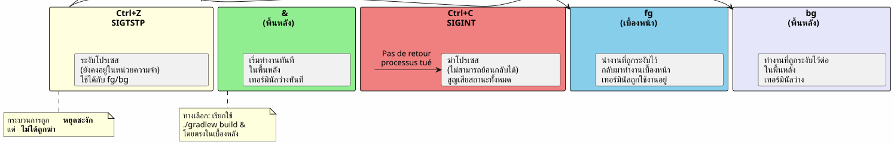
| ทางลัด/คำสั่ง | สัญญาณ | ผล | ย้อนกลับไปหรือ? |
|---|---|---|---|
|
|
ระงับกระบวนการ (ค้าง, ในหน่วยความจำ) |
ใช่:`fg` ou |
|
|
ฆ่าโปรเซส (เสร็จสิ้น) |
ไม่ : กระบวนการถูกทำลาย |
|
|
ฆ่าโปรเซส + core dump |
ไม่: กระบวนการถูกทำลาย |
|
กรุณาใส่ข้อความภาษาฝรั่งเศสที่ต้องการให้แปลด้วยค่ะ |
เรียกใช้ในเบื้องหลังโดยตรง |
`fg`เพื่อนำมันกลับมาสู่เบื้องหน้า |
Ctrl+Z`เป็นไม่ทำลาย. กระบวนการถูกหยุดไว้ตามสภาพเดิมในหน่วยความจำ คุณสามารถกลับมาดำเนินการต่อได้ทันทีด้วย`fg. นี่คือ pause ไม่ใช่ stop
|
วงจรชีวิตที่สมบูรณ์ของงาน
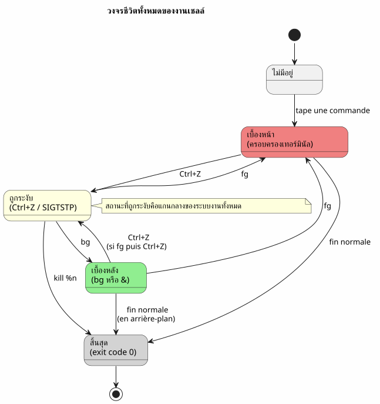
เคล็ดลับขั้นสูง
fg กับงานล่าสุดและการเรียนสลับกับการทำงาน
fg`เมื่อไม่มีอาร์กิวเมนต์ จะคืนงานที่ถูกทำเครื่องหมาย+(ใหม่ที่สุด) แต่คุณยังสามารถใช้%-`เพื่อกำหนดเป้าหมายงานก่อนหน้า:
$ vim file1.txt
^Z
[1]+ Stoppé vim file1.txt
$ vim file2.txt
^Z
[2]+ Stoppé vim file2.txt
$ fg # ramène job [2] (le plus récent)
$ fg %- # ramène job [1] (le précédent)ฆ่างานอย่างเรียบร้อย
$ jobs
[1]- Stoppé vim config.yml
[2]+ Stoppé ./gradlew test
$ kill %2 # envoie SIGTERM au job 2
$ kill -9 %1 # envoie SIGKILL au job 1 (force)désown : แยกออกจากเชลล์
`disown`ลบงานหนึ่งงานออกจากตารางงานของเชลล์ โปรเซสยังคงทำงานอยู่แต่ไม่สามารถนำกลับมาด้วย`fg`ไม่มีข้อความต้นฉบับให้แปล กรุณาส่งข้อความภาษาฝรั่งเศสที่ต้องการแปล
$ ./gradlew build &
[1] 12345
$ disown %1
# Le processus continue mais n'est plus lié au shell
# Ça survives à la fermeture du terminalรวมกับ nohup สำหรับกระบวนการที่ใช้เวลานาน
เพื่อให้กระบวนการหนึ่งรอดจากการปิดเทอร์มินัล:
$ nohup ./gradlew build &
[1] 12345
$ disown %1
# Le build continue même si vous fermez le terminal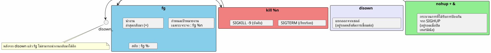
หลุมพรางและข้อผิดพลาดที่พบบ่อย
สับสน Ctrl+Z กับ `Ctrl+C
นี่คือข้อผิดพลาดที่พบบ่อยที่สุด`Ctrl+C`ฆ่าโปรเซส`Ctrl+Z`ระงับไว้ หากคุณกดที่`Ctrl+C`โดยอัตโนมัติ สถานะทั้งหมดจะสูญหาย — ไฟล์ที่เปิดอยู่ เซสชัน LLM และบิลด์ที่กำลังดำเนินการ
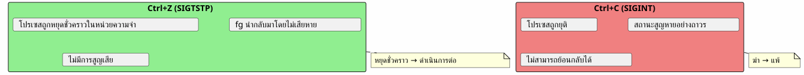
jobs เป็นเฉพาะภายใน shell
jobs, fg et `bg`จะทำงานได้เฉพาะในเชลล์ที่เริ่มโปรเซสเหล่านั้นเท่านั้น หากคุณเปิดเทอร์มินัลใหม่ คุณจะไม่เห็นงานของอีกเทอร์มินัลหนึ่ง
# Terminal 1
$ vim file.txt
^Z
[1]+ Stoppé vim file.txt
# Terminal 2 (nouveau)
$ jobs
# (rien — les jobs sont locaux au shell)หากต้องการดูโปรเซสทั้งระบบ ให้ใช้`ps` ou `htop`Please provide the French text you’d like me to translate into Thai.
ps aux | grep vimงานจะไม่คงอยู่หลังจากการปิดเชลล์
หากคุณปิดเทอร์มินัล งานที่ถูกระงับหรือทำงานอยู่เบื้องหลังทั้งหมดจะถูกทำลาย เพื่อให้โพรเซสหนึ่งอยู่รอด ให้ใช้`nohup`No source text was provided to translate. Please send the French text you’d like translated into Thai.`disown`The text to translate is missing. Please provide the French text you’d like me to translate into Thai.
$ nohup ./gradlew build &
[1] 12345
$ disown %1
# Fermer le terminal → le build continueโปรเซสแบบโต้ตอบและ fg
โปรแกรมโต้ตอบบางโปรแกรมทำงานได้ไม่ดีนักหลังจาก`Ctrl+Z`No source text was provided to translate.fg. มันหายากแต่มันก็เกิดขึ้น :
-
บางโปรแกรมที่ใช้สัญญาณ (vim, htop, less จัดการได้ดี`Ctrl+Z`)
-
โปรแกรมเครือข่ายที่ทำงานเป็นเวลานาน (ssh, opencode) โดยทั่วไปจะกู้คืนได้อย่างถูกต้อง
-
โปรแกรมที่ปรับเปลี่ยนเทอร์มินัล (ncurses) อาจทำให้เทอร์มินัลอยู่ในสถานะที่ไม่คาดคิดได้ในบางครั้ง
ในกรณีที่เทอร์มินัลเสียหายหลังจาก`fg`, พิมพ์ :
resetแผนภาพสรุป
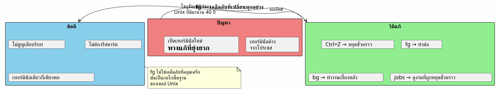
ทำไม fg จึงถูกประเมินต่ำเกินไป
นักพัฒนาสมัยใหม่ส่วนใหญ่ค้นพบ`fg`ช้า หรืออาจจะไม่เลยก็ได้ เหตุผลบางประการ:
-
IDE ซ่อนเทอร์มินัล: VS Code มีเทอร์มินัลในตัว แต่แท็บหลายแท็บทำให้`fg`ดูเหมือนจะจำเป็นน้อยลง
-
เครื่องมือกราฟิกแทนที่ CLI: ตัวจัดการไฟล์, โปรแกรมตรวจสอบระบบ, ไคลเอนต์ Git แบบกราฟิก
-
tmux และ screen: มัลติเพล็กเซอร์เหล่านี้แก้ปัญหาเดียวกันด้วยวิธีที่ต่างกัน แต่`fg`ง่ายกว่าและพร้อมใช้งานเสมอ
อย่างไรก็ตาม`fg`คือ :
-
สากล: มีอยู่ในเชลล์ POSIX ทั้งหมด (bash, zsh, fish…)
-
โดยไม่ต้องพึ่งพา: ไม่จำเป็นต้องติดตั้ง tmux หรือ screen
-
สแนปช็อต: การโจมตีสองครั้ง (
Ctrl+Z`แล้ว`fg) เพื่อหยุดชั่วคราวและดำเนินการต่อ -
ตัวรักษาบริบท: สถานะของกระบวนการยังคงสมบูรณ์
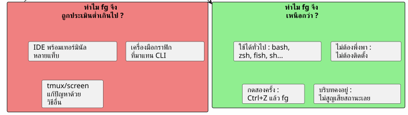
บันทึกทางเทคนิค: สัญญาณ
สำหรับผู้ที่อยากรู้ นี่คือสัญญาณที่เกี่ยวข้อง:
| สัญญาณ | ชื่อ | ส่งโดย | ผล |
|---|---|---|---|
2 |
|
|
การขัดจังหวะ — ยุติกระบวนการ |
3 |
|
|
ออกพร้อม core dump |
18 |
|
|
หยุดแบบโต้ตอบ — ระงับกระบวนการ |
19 |
|
|
ดำเนินการต่อ — กลับมาดำเนินกระบวนการที่ถูกระงับ |
15 |
|
|
การสิ้นสุดอย่างเรียบร้อย |
9 |
|
|
การยุติแบบบังคับ (ไม่สามารถสกัดกั้นได้) |
โฟลว์ทั้งหมด：
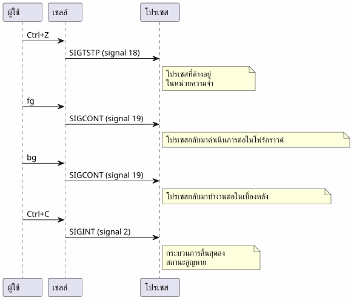
บทสรุป
`fg`ไม่ใช่เคล็ดลับที่คลุมเครือ — มันเป็นกลไกพื้นฐานของเชลล์ Unix ที่มีให้ใช้มาตั้งแต่ทศวรรษ 1970 การที่นักพัฒนาส่วนใหญ่ไม่รู้เรื่องนี้เป็นอาการของยุคสมัยของเรา: IDE และมัลติเพล็กเซอร์ทำให้เราห่างไกลจากพื้นฐาน
แต่เมื่อคุณอยู่บนเซิร์ฟเวอร์ SSH ในเทอร์มินัลแบบมินิมัล หรือเพียงแค่กำลังใช้`opencode`และที่ LLM กำลังทำงานอย่างเต็มที่ —Ctrl+Z, fg, bg, `jobs`เป็นเพื่อนที่ดีที่สุดของคุณ
Please provide the French text you’d like me to translate into Thai. Ctrl+Z หยุดชั่วคราว, fg กลับมาทำงานต่อ นี่คือปุ่มหยุด-เล่นของเทอร์มินัล No text was provided to translate (the message contains only "__"). Please send the French text you’d like translated into Thai.
เอกสารอ้างอิง
-
man bash— ส่วนการควบคุมงาน -
man signal— รายการสัญญาณ POSIX